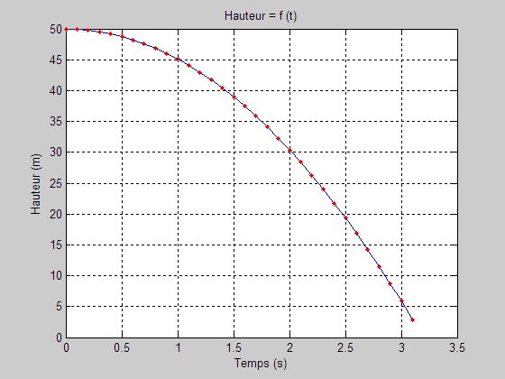

WhileTour.m
Pour définir le nombre de cycles de boucle for, il faut connaître le temps nécessaire pour parcourir 50 m en chute libre (ou bricoler un peu).
h = 0.5*g*t^2
Avec la boucle while, il suffit d'itérer TanQue la hauteur est positive.
clear; clc; close all g = 9.81; % m/s^2, accélération gravitationnelle temps = 0; % temps initial, s dt = 0.1; % incrément de temps, s h0 = 50; % m, hauteur initial i = 0; % initialisation, compteur de cycle hauteur = h0; while(hauteur >= 0) i = i+1; t(i) = temps; h(i) = hauteur; % Étape suivante (0.1 s plus tard) temps = temps + dt; hauteur = h0-0.5*g*temps*temps; end fprintf('Temps de chute = %.1f s.\n',t(end));
Temps de chute = 3.1 s.
plot(t,h,'-b', t,h,'.r'); grid on; xlabel('Temps (s)'); ylabel('Hauteur (m)'); title('Hauteur = f (t)');
